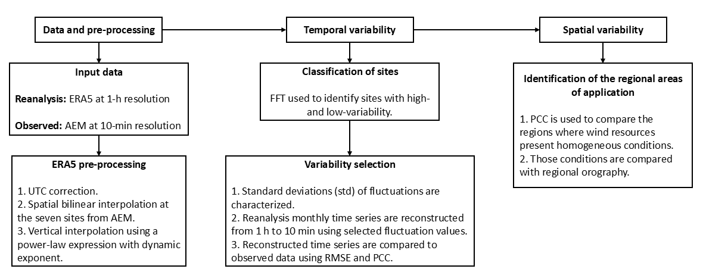
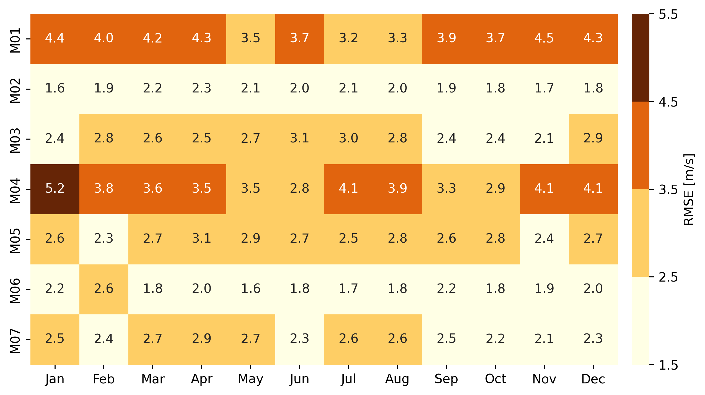
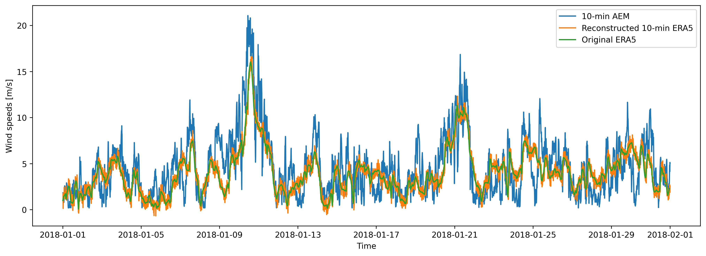

4 Wind speed variability: temporal and spatial analysis
4.1 Introduction {#sec: intro}
Wind variability is a result of the wind’s complex nature; these changes are manifested at different time scales that range from years and months to seconds, with inter-scale variability across those time frames. Their effects on wind turbine performance are manifested in different wind energy variables, from annual energy production to energy quality. Evaluating the impact of variable wind speeds on wind energy production involves assessing their performance under these conditions. This analysis helps us understand wind speeds behavior and pinpoint potential risks in scenarios with high variability. In particular, dynamical analyzes in the field of wind energy require capturing the turbulent scale to perform short-term simulations of mechanical, electrical, and aeroelastic components to assess the performance of wind turbines under specific environmental conditions [1–3].
Short-term fluctuations can influence the performance and fatigue of wind turbines in the wind. Turbine performance and fatigue are based on dynamic studies and require high-frequency data to describe wind speed dynamics and capture these variations accurately [4]. The methodologies for generating those signals can include Monte Carlo simulations [5], data-driven models [6], probabilistic approaches [7], or statistical techniques based on the distribution of the wind speeds and their variability [8]. The time series data used in these simulations are typically generated using synthetic signals to represent the variability of the wind. However, a caveat is that such signals are commonly not related to local wind conditions. With the method proposed here, the performance of particular technologies would be tested under local variability, ensuring its robustness.
Reliable data on renewable resources, such as solar, wind, or wave energy, are necessary to develop feasibility analyses related to the performance of the technology in a region [9]. Reanalyses data sets are valuable for assessing technology performance. In addition, they contribute to the modeling of renewable energy resources by providing consistent long-term data relevant to a particular local area [10].
Reanalysis data sets combine observations and a numerical model through a data assimilation process [11] available for several decades in the past. The ERA5 [12] and MERRA2 [13] reanalyses are the most widely used in the wind energy industry, due to their hourly temporal and their spatial resolution of approximately 30 km and 50 km, respectively. For wind energy applications, global reanalyses have demonstrated their accuracy for predicting wind resource patterns and velocities in both offshore and onshore locations [14]. In other studies, the variability of wind resource reanalysis has been used to study wind speed conditions and power production in different regions [15–17], or to analyze the complementarity between wind and solar resources [18], for example. The ERA5 reanalysis has been shown to correlate well with observational data in some Mexican locations [19, 20]. However, two key facts must be addressed regarding the use of reanalysis in wind energy studies. Firstly, these data have temporal and spatial resolution limitations, which may not be sufficient to accurately capture the high-resolution variability of wind speed and its effects on wind turbines [21]. Secondly, reanalyses exhibit an underestimation bias and can present larger errors in coastal and mountainous regions [22]. Upon correction and when experimental data are accessible, the reliability of the reanalysis data is enhanced, and the uncertainties related to the modeled phenomena are diminished [23, 24].
Recent studies in enhancing wind speeds’ temporal or spatial resolution from reanalyses involve using machine learning techniques to generate predictive models [25–27]. These approaches utilize vast amounts of reanalysis and measured data to train predictive models that require extensive datasets for training and higher computational resources.
Considering that some applications, such as dynamic analysis, require high-resolution datasets that are often unrelated to local conditions and the strong capability demonstrated by reanalysis data in replicating long-term conditions in specific regions of Mexico, in this study, we introduce a methodology to improve the hourly time resolution of reanalysis time series to 10-minutes, by identifying temporal fluctuations in wind speed from a year of actual data in seven regions in Mexico. The reconstruction is based on the analysis of temporal and spatial variability. The temporal analysis allows for the characterization of the variability throughout the year. In contrast, the spatial analysis identifies regions with similar wind resources and delimits where the method can be applied. This approach links regional experimental information to add it to the reanalysis’ wind speed time series.
In Mexico, the goal is to transition to a sustainable energy system, aiming for 50% clean energy sources in the electricity mix by 2050 [28]. As of 2022, the country had an installed wind capacity of 7,317 MW, concentrated in two key regions: the Tehuantepec Isthmus in Oaxaca and Tamaulipas, which together account for 37.7% and 23.4% of the total installed wind capacity, respectively [29]. Mexico plans to further increase its clean energy capacity, adding 88% from 2027 to 2037, with wind energy contributing 8.65% of this total, equating to approximately 3,430.42 MW [30]. These regions are particularly rich in onshore and offshore wind resources, making them ideal for implementing the methodology proposed in this study. However, despite the potential of renewable sources, insufficient investment in research, development, and innovation of renewable energy technologies may limit Mexico’s ability to meet its renewable energy goals [31]. Given the diverse environments across the country, linking short-term fluctuations to regional characteristics enables the development of customized technological solutions.
The structure of the paper is as follows: First, the general methodology is introduced, including the identification of temporal and spatial variability through power spectrum analysis. This is followed by a detailed explanation of the resolution improvement method and a description of the reanalysis and experimental datasets. The subsequent section discusses the results, and finally, the conclusions are summarized.
4.2 Data and methodology
4.2.1 Data and pre-processing
Observational data is obtained from the “Atlas Eolico Mexicano” (AEM) project described on section [sub: aem]. Data from the seven sites during 2018 is used; the sites are shown on Figure 1. Measurements were taken from sensors at 80 m above ground level at 1 Hz and averaged every 10 minutes, which is the resolution considered in this research.
The reanalysis used in this investigation is the ERA5 hourly data on single levels for 2018 with a horizontal resolution of \(0.25^{\circ} \times 0.25^{\circ}\). The horizontal components of wind speed at \(10~m\) and \(100~m\) were obtained from ERA5 to calculate the wind speed magnitude and then bilinearly interpolated to obtain an hourly time series at the tower’s geographic locations. The time zones were then corrected from UTC-0 to the local time zone. Finally, the wind speeds were extrapolated vertically to the measured heights using the power law’s empirical expression described in Section [sub: abl]. The coefficient \(\alpha\), is calculated at each time step using the wind speeds at 10 m and 100 m provided by the ERA5 dataset. It is derived by applying the power law profile relationship, as expressed in Equation [eq: power_law], using the ratio between the two heights and their corresponding wind speeds.
4.2.2 Methodology
The first stage of the methodology is to characterize the fluctuations in wind speed and their temporal and spatial variability. In this work, fluctuations are defined as the difference between each value at a 10-minute resolution and its hourly average; meanwhile, the variability is represented by the standard deviation of the fluctuations. To characterize those components, first, a temporal and spatial variability analysis of the wind speed data is performed to select suitable values per region, and then, the reconstruction method is implemented based on a statistical analysis described in the following section.
The reconstruction method relies on finding the optimal period of observations needed to characterize the fluctuations and accurately fit a probability density function (pdf). This aspect is examined more carefully, given the importance of time-series length on wind power estimates demonstrated by previous studies [32]. The initial phase involves an analysis of time-dependent variability, aiming to identify the specific time periods that have the most significant impact on experimental wind variability. To accomplish this, the power spectrum of the experimental time series is estimated and examined using a Fast Fourier Transform (FFT). With this information, the typical variability is studied in each location, and the enhanced ERA5 resolution time series is compared with the actual data. Subsequently, a spatial analysis is performed to identify regions with similar wind conditions where reconstruction can be implemented. This will offer an additional criterion for time-up-resolution reliability. Finally, an example is presented as a study case to discuss the method’s effectiveness.
The described methodology is applied to the seven sites where data was collected. For the temporal analysis, the daily fluctuating components of wind speeds from the observed data are calculated for each day of the year as described in the next section on equation [eq: turbulent_obs]. Then, the effectiveness of the reanalysis in reproducing the data at those specific sites is evaluated using the Pearson Correlation Coefficient (PCC) and the Root Mean Square Error (RMSE). The RMSE and PCC are used as complementary metrics to evaluate both the magnitude of errors and the similarity in temporal patterns between the reconstructed and observed data.
For the spatial analysis, the reanalysis wind speeds during 2018 were first interpolated at the seven specific sites. Then a spatial grid was generated, in which the interpolated time series from each site were repeated at all points of the grid within the reanalysis domain. The PCC between the original reanalysis data and the newly generated grid with replicated time series was then calculated. This process was repeated by varying the wind speed time series for each site. Finally, a spatial classification is carried out between areas with a similar high PCC around each site. The methodology described in this section is summarized in Figure 2.
{#fig: diagram width=“\textwidth”}
4.2.3 Theory {#sec: theory}
The reconstruction methodology consists of using high temporal resolution wind speed observations from meteorological tower measurements (Met), \(u_{obs}\), to enhance the temporal resolution of the hourly wind speed ERA5 reanalyses, \(u_{ren}\), obtained from a bilinear interpolation at the location of the Met towers.
We assume the wind speed, \(u\), can be decomposed into a mean and a fluctuating (turbulent) component [33]: \[u = \overline{u}+u', \label{eq: turbulent_flow}\] where \(\overline{u}\) is the mean and \(u'\) is a fluctuating component. Because \(u_{obs}\) is the time series with high temporal resolution, first, the mean values are obtained at the same resolution of \(u_{ren}\), which is hourly. This average is named \(\overline{u}_{obs}\). Then, the fluctuation of each observation at its original frequency is calculated, \(u_{obs}'\):
\[u_{obs}'=u_{obs}-\overline{u}_{obs} \label{eq: turbulent_obs}\]
These fluctuations can be characterized by a normal probability density function (pdf) [34], also identified in our findings. Based on the normal pdf obtained, wind speed fluctuations with a random distribution at the resolution of the observations, \(u'_{pdf}\), are reconstructed and subsequently added to \(u{ren}\):
\[u_{new} = u_{ren}+u'_{pdf}, \label{eq: new_time}\]
Given that the average of \(u'_{pdf}\) is zero, implicitly in equation [eq: new_time], it is assumed that \(u_{ren}\) are equal to the hourly mean of \(u_{new}\). The fluctuations of \(u_{new}\) are randomly obtained from the characterized pdf and have the resolution of the observations. With this strategy, \(u_{ren}\) data is enriched by adding velocity fluctuations whose distributions coincide with \(u'_{obs}\). This apparent increased resolution is a consequence of incorporating information from the observations to the reanalysis data. Then, in a one-hour interval between times \(t_h\) and \(t_{h+1}\), there are six data points with mean \(u_{ren}(t_h)\) and six normally distributed fluctuations obtained from \(u'_{pdf}\). The variables introduced in the methodology are summarized in Table 1.
::: {#tab: variables} Variable Meaning Status ———————- ————————————————————– ———— \(u_{obs}\) Measured WS Input \(u_{ren}\) Hourly WS from the reanalysis Input \(\overline{u}_{obs}\) Hourly mean of the observed WS Calculated \(u_{obs}'\) Fluctuation of the observed WS, obtained from an hourly mean Calculated \(u'_{pdf}\) Fluctuations from the pdf Calculated \(u_{new}\) New high frequency WS Output
: Wind Speed (WS) Variables introduced in the Methodology section. :::
[]{#tab: variables label=“tab: variables”}
4.3 Results and discussion {#sec: case_studies}
4.3.1 Power spectrum analysis
The initial aspect analyzed is the power spectrum of the experimental time series of the seven sites, as illustrated in Figure 5. Across these locations, the diurnal cycle is evident, although with varying intensities. Based on this, the daily cycle is selected as the frequency to analyze the variability. The stations are categorized into two groups reflecting low and high variability. Specifically, towers M01, M02, M05, and M06 exhibit lower variability (Fig. 3), whereas the other stations are classified as having higher variability (Fig. 4)
4.3.2 Temporal variability
The subsequent element of our analysis focuses on the temporal variability throughout the year, characterized by the daily standard deviations (std) of the fluctuations. Figure 8 illustrates the stds for each site, considering both the annual temporal progression and the number of days that show this degree of dispersion. The figure on the left, Figure 6, shows the changes in standard deviation over the year for each site. Lighter hues correlate with higher variability, while darker hues indicate lower variability. Note that the previous classification based on the variability magnitude remains consistent, as lighter colors are still prominent at the same sites.
In Figure 7, the number of days associated with different levels of variability is shown for each site to determine their frequency. Analysis within defined variability ranges reveals that all sites predominantly exhibit low values, whereas high values are found mainly among the high-variability group.
4.3.3 Variability selection
In this section, an analysis of specific ranges of variability is studied. For each month and location, the maximum and minimum values were identified and then used to reconstruct the interpolated ERA5 time series. Now, two analysis criteria are used, first the PCC between the hourly interpolated ERA5 and the experimental wind speeds, shown in Figure 9. This is done to identify how well wind speeds are reproduced at each location. Next, for every minimum-maximum pair of the std values, the time series reconstructions from one hour to ten minutes resolution were performed and subsequently compared against the experimental time series by estimating the Pearson correlation coefficient (PCC). Figure 11 illustrates the variations in the monthly PCC values when using the minimum and maximum for reconstruction. The right columns at each month show that using the maximum values of the stds gives higher differences in the PCC values since the dispersion on the reconstructed series increases while using the minimum values maintains the original correlation.
After analyzing the temporal correlations, the RMSE values were calculated between the 10-minute observational time series and each reconstructed series using both maximum and minimum dispersion values. These results help identify the most effective dispersion values for reconstructing the time series. Notably, the analysis revealed that across all locations, the smallest errors were consistently observed when using the minimum monthly fluctuation values.
Figure 12 illustrates the RMSE between the 10-minute experimental time series and the reconstructed series based on minimum dispersion values. In general, the M01 and M04 sites exhibit higher RMSE values compared to the other locations. These larger errors are likely influenced by geographical factors. For instance, M01 is located in a region characterized by complex terrain, which increases variability and reduces reconstruction accuracy. In contrast, the elevated RMSE at the M04 site may be attributed to frequent high wind speeds and ERA5’s known underestimation bias in such conditions, contributing to the observed error index.

Reconstructed time series of wind speeds using minimum and maximum dispersion approaches can occasionally result in negative values of wind speeds, particularly when reanalysis wind speeds are near zero. This issue is likely due to the underestimation inherent in the reanalysis data since fluctuations were characterized by observed data. When applying the minimum dispersion method, the occurrence of negative values is generally less than 1% for most months across the analyzed sites. In contrast, the maximum dispersion cases lead to a more frequent occurrence of negative wind speed magnitudes. Obviously, negative wind speed magnitudes are unrealistic, but given the small frequency of events for low variability, the existence of these cases is considered tolerable and focuses further analysis on these cases.
4.3.4 Spatial Variability
After conducting the variability analysis from both magnitude and temporal viewpoints, the next step involves examining the regional similarity of wind speeds. This is done to pinpoint areas with comparable wind conditions, suggesting potential sites for the reconstruction methodology’s application. Figure 13 illustrates the PCCs between the ERA5 data at the mast location and the surrounding domain points. The range of correlation values between 0.7 and 1.0 are shown. It has been noted that as the distance from the mast being correlated increases, the correlation values tend to decrease, suggesting a geographic influence.
As a supplement to the analysis, the slope of sub-grid scale orography from the ERA5 dataset is depicted for each location. Sub-grid scale orography refers to terrain features such as valleys, hills, and small mountains that are smaller than the model grid resolution and therefore not directly resolved [35]. Instead, their effects are parameterized using features derived from higher-resolution elevation data. In this study, the slope parameter is used as an indicator of terrain complexity. Higher slope values reflect more rugged or irregular topography, while lower values correspond to flatter landscapes. The parameter across Mexico is shown in Figure 13. This makes sub-grid orography a useful proxy for assessing how local terrain variations may influence wind patterns. The analysis shows that topography significantly affects areas with high correlation: complex terrains, such as those in M01, are associated with smaller high-correlation regions, whereas flatter areas like M02 or M06 exhibit more homogeneous, extensive zones.
The topographic influence over the homogeneity of wind resources helps define the areas where the reconstruction method can be applied, under the assumption that wind speed fluctuations and variability remain similar within regions with high PCC. In this context, the methodology can be applied using observational data that fall within these identified zones of homogeneity. However, it is important to note that the method does not improve the correlation between reanalysis and observational data. Therefore, before applying the resolution enhancement, users should ensure that the reanalysis data and the observational series at the location of interest are already highly correlated.
4.3.5 Reconstruction example
Previous analyses demonstrate that the minimum value of the daily stds for each month can be properly used to increase the reanalysis wind speed time series from one hour to ten minutes, maintaining values nearly the original Pearson coefficient between the reanalysis and the actual data. Table 2 shows the mentioned values of the stds.
::: {#tab: final_std} Jan Feb Mar Apr May Jun Jul Aug Sep Oct Nov Dec ——— ——— ——— ——— ——— ——— ——— ——— ——— ——— ——— ——— ——— M01 0.37 0.39 0.36 0.37 0.38 0.37 0.46 0.29 0.31 0.37 0.37 0.36 M02 0.40 0.32 0.42 0.45 0.36 0.48 0.45 0.47 0.40 0.35 0.43 0.36 M03 0.39 0.59 0.53 0.62 0.67 0.56 0.64 0.49 0.47 0.48 0.46 0.36 M04 0.54 0.36 0.35 0.40 0.37 0.37 0.49 0.66 0.42 0.44 0.41 0.38 M05 0.39 0.42 0.54 0.49 0.45 0.47 0.49 0.48 0.43 0.33 0.38 0.33 M06 0.33 0.39 0.29 0.40 0.42 0.47 0.49 0.45 0.44 0.39 0.37 0.35 M07 0.61 0.59 0.60 0.69 0.61 0.47 0.66 0.56 0.46 0.46 0.45 0.40
: Values of the monthly std fluctuations recommended to create a 10-minute time series from the hourly ERA5. :::
As previously assumed, the fluctuations of the wind speeds present a normal distribution with zero mean; therefore, only the std varies between sites and time. These values can be used by users interested in creating a high-frequency time series from reanalysis.
For example, Figure 14 shows, for the site M03 during January, the actual data at a 10-minute frequency and the hourly reanalysis. To increase the frequency of the reanalysis, we should use the std value from Table 2 corresponding to that month and site, in this case, 0.39.
{#fig: example_m03 width=“100%”}
4.4 Key insights
This study introduces a methodology to enhance the temporal resolution of ERA5 reanalysis data using a statistical approach that characterizes wind speed fluctuations and variability at seven sites in Mexico. The analysis of variability was conducted through both temporal and spatial assessments. An analysis of the power spectrum showed that the diurnal cycle is the main frequency affecting fluctuations in wind speed. Consequently, the research divided the locations into two categories: high variability (M03, M04, M07) and low variability (M01, M02, M05, M06). The temporal analysis demonstrated that using the minimum daily standard deviation of wind speed fluctuations provided optimal results for reconstructing high-frequency time series while maintaining PCC values. Error analysis using RMSE confirmed alignment with power spectrum data, categorizing locations by high and low variability and emphasizing the importance of considering orography to minimize error rates. Terrains that are more intricate, as those where M01 and M04 stations are located, showed increased errors, while smoother terrains displayed reduced error rates. Orography significantly impacts the regions where the methodology is applicable, with more extensive areas noticed in the north-eastern and south-eastern stations, regions recognized as flat terrains. Spatial analysis confirmed that the characterized standard deviations could be applied effectively in regions with similar PCC values, making this method particularly suitable for areas where the reanalysis data show high correlations with local observations. These findings support the viability of this methodology in improving temporal resolution in reanalysis data sets.